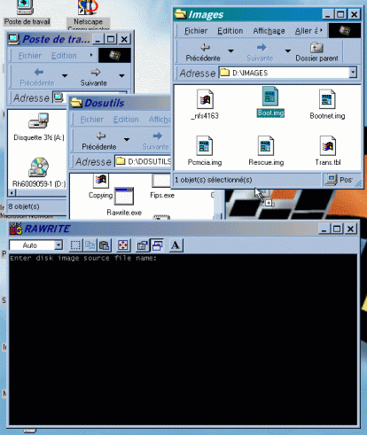
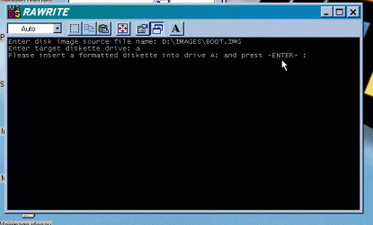

Solutions informatiques simples pour un monde complexe |
|
|
Création d'une disquette de "boot"
Si votre PC ne peut pas directement démarrer à partir
d'un CDROM, il faut créer une disquette de démarrage (boot).
Pour éviter de créer une disquette, modifier les paramètre du BIOS pour que le PC démarre depuis le CDROM :
Si votre PC ne possède pas cette option ... :
Démarrer Windows et insérer le CDROM Linux.
Chercher le programme Rawrite. En général, il se trouve
dans le répertoire Dosutils ou Install ...
Il se peut qu'il s'appel Rawrite ou Rawrite3, ceci n'a pas d'importance.
RedHat : <CDROM>:\Dosutils\RawriteDouble-cliquer sur l'icône Rawrite.
SuSE : <CDROM>:\Dosutils\Rawrite\Rawrite
Slackware : <CDROM>:\Install\Rawrite
OpenLinux : <CDROM>:\Col\Launch\Floppy\Rawrite
Debian : <CDROM>:\Install\Rw2_0
Une fenêtre s'ouvre et demande le nom du fichier source.
Chercher le fichier source de la disquette de boot correspondant à une installation normale.
RedHat : <CDROM>:\Images\Boot.img
SuSE : <CDROM>:\Disks\Bootdisk
Slackware : <CDROM>:\Bootdsks.144\Bare.i et <CDROM>:\Rootdsks\Color.gz
OpenLinux : <CDROM>:\Col\Launch\Floppy\install.144
Debian : <CDROM>:\Install\Resc1440.bin
Déplacer l'icône du fichier source sur la fenêtre
Rawrite et lâcher le bouton de la souris.
Le nom du fichier s'affiche dans la fenêtre Rawrite.

Presser la touche de retour à la ligne (>>ENTER<<) dans
la fenêtre Rawrite.
Il demande d'indiquer le lecteur de disquette cible.
Taper "a" et >>ENTER<<
Insérer une disquette neuve et formatée DOS dans
le lecteur de disquette.
Presser >>ENTER<<

Attendre que Rawrite termine sont travail.
Vérifier qu'il n'y a pas de message d'erreur.
Si il y a un message d'erreur, recommencer toute l'opération
avec une autre disquette neuve.